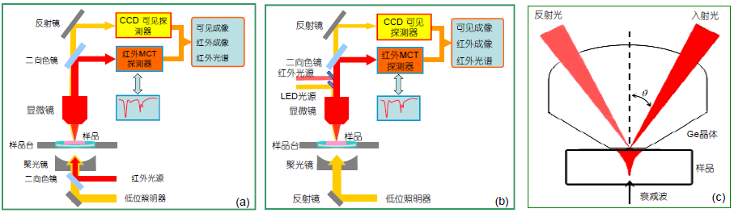

研究领域
我们的研究工作紧紧围绕光谱展开，包括红外光谱、近红外光谱、拉曼光谱、荧光光谱等。我们的研究方向处于生物医学光子学和化学计量学的前沿领域。我们的目标是开发重大疾病的新型诊断策略以及技术研究。目前研究方向包括：
生物医学光谱学及成像(Biomed Spectroscopy and Micro-Imaging)光谱显微图像分析(Spectroscopic Image Analysis)
计量学建模及计算(Chemometrics Modeling and Assessment)
生医光子学技术开发及应用 (D&A of Biomed Photonics Tech.)
光谱生物分析化学(Spectroscopic Bioanalytical Chemistry)
分子光谱学及应用 (Molecular Spectroscopy and Application) (Raman、IR、Fluo.、Abs、SHG)
测量用的光谱可分为发射光谱、吸收光谱、散射光谱、荧光光谱等。

FTIRI 系统原理示意图 (a) 透射模式; (b) 反射模式; (c) 衰减全反射模式

figure from Lui H, Zhao J, McLean D, et al. Real-time Raman spectroscopy for in vivo skin cancer diagnosis[J]. Cancer research, 2012
给王老师预留
生物光子学 显微光学 生物医学成像